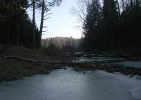
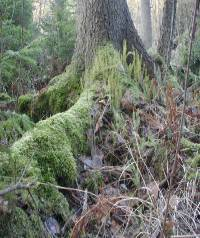
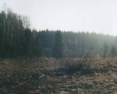
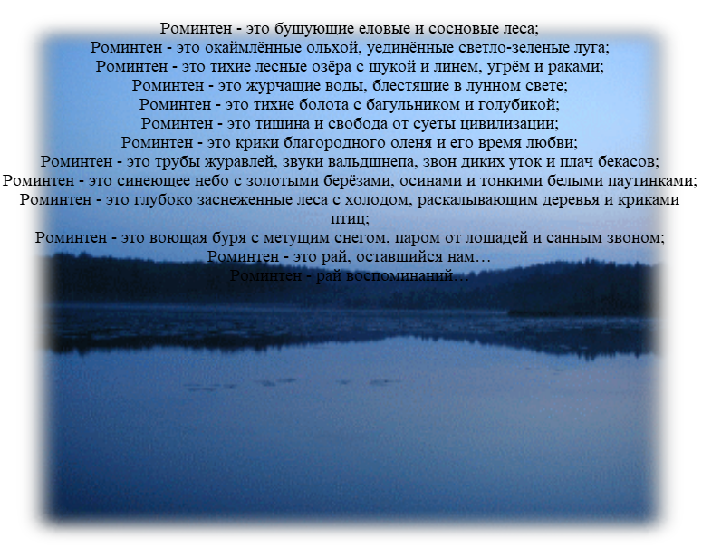
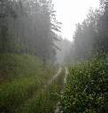
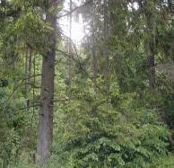
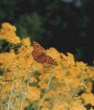
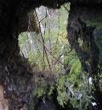
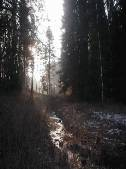

Лес и Роминтенская пуща
Не было ещё Балтийского моря, большая часть территории современной Калининградской области была покрыта льдом и водой, но эта земля уже видела свет Солнца, согревающего и дарующего жизнь.
Именно сюда, на Виштынецкую возвышенность, на берег богатого рыбой Виштынецкого озера, около десяти тысяч лет назад пришли первые люди нашего края.

От древнего лесного массива к Роминтен Хайде
Девственные леса, покрывавшие холмы возвышенности, были частью обширного лесного массива, известного в средневековье как Великая Дичь. Эти леса были домом для многих диких животных, которых позднее человек истребил или вытеснил. Исчезли зубр, медведь и тур; рысь стала редким гостем.
Охота принесла этим местам европейскую известность. В конце XIX — начале XX века Роминтен Хайде стала территорией царской охоты с развитой лесной и егерской службой. Архитектура отдельных строений и лесных поселений, связанная с инициативами Вильгельма II, отличалась норвежскими мотивами. Старый текст вспоминает королевский охотничий замок с часовней Хубертуса и охотничий двор на высоком берегу Роминты.



Лес сегодня
Роминтенская пуща и сегодня остаётся одним из наиболее выразительных природных комплексов Калининградской области. В исходном тексте перечислены благородный олень, лось, волк, лисица, барсук и бобр, а также редкие птицы — орлан-белохвост, скопа и чёрный аист. Разнообразие водоёмов и лесных местообитаний поддерживает богатую флору и фауну.
Природоохранное значение Виштынецкой возвышенности, Красного леса, озёр и заболоченных низин трудно переоценить. Роминтенскую пущу называли «зелёным сердцем Восточной Пруссии» — и сохранение этого природного наследия зависит от ответственного отношения людей к лесу.





Исторические сведения и оценки численности видов перенесены из старого текста сайта; даты и современные статусы требуют проверки перед публикацией.